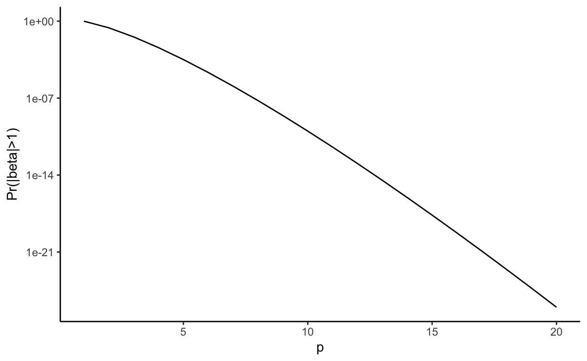

A repost (with edits, revisions, and footnotes) from Andrew’s blog about how much I hate the Bayesian Lasso. Originally published 2nd November, 2017.
And then there was Yodeling Elaine, the Queen of the Air. She had a dollar sign medallion about as big as a dinner plate around her neck and a tiny bubble of spittle around her nostril and a little rusty tear, for she had lassoed and lost another tipsy sailor—Tom Waits
It turns out I turned thirty two1 and became unbearable. Some of you may feel, with an increasing sense of temporal dissonance, that I was already unbearable2. Others will wonder how I can look so good at my age3. None of that matters to me because all I want to do is talk about the evils of marketing like the 90s were a vaguely good idea4.
The thing is, I worry that the real problem in academic statistics in 2017 is not a reproducibility crisis, so much as that so many of our methods just don’t work. And to be honest, I don’t really know what to do about that, other than suggest that we tighten our standards and insist that people proposing new methods, models, and algorithms work harder to sketch out the boundaries of their creations. (What a suggestion. Really. Concrete proposals for concrete change. But it’s a blog. If ever there was a medium to be half-arsed in it’s this one. It’s like twitter for people who aren’t pithy.)
So what is the object of my impotent ire today. Well nothing less storied than the Bayesian Lasso.
It should be the least controversial thing in this, the year of our lord two thousand and seventeen, to point out that this method bears no practical resemblance to the Lasso. Or, in the words of Law and Order: SVU, “The [Bayesian Lasso] is fictional and does not depict any actual person or event”.
The Bayesian Lasso is a good example of what’s commonly known as the Lupita Nyong’o fallacy5, which goes something like this: Lupita Nyong’o had a break out role in Twelve Years a Slave, she also had a heavily disguised role in one of ’ the Star Wars films (the specific Star Wars film is not important. I haven’t seen it and I don’t care). Hence Twelve Years a Slave exists in the extended Star Wars universe.6
The key point is that the (classical) Lasso plays a small part within the Bayesian Lasso (it’s the MAP estimate) in the same way that Lupita Nyong’o played a small role in that Star Wars film. But just as the presence of Ms Nyong’o does not turn Star Wars into Twelve Years a Slave, the fact that the classical Lasso can be recovered as the MAP estimate of the Bayesian Lasso does not make the Bayesian Lasso useful.
And yet people still ask if they can be fit in Stan. In that case, Andrew answered the question that was asked, which is typically the best way to deal with software enquiries7. But I am brave and was not asked for my opinion, so I’m going to talk about why the Bayesian Lasso doesn’t work.
So why would anyone not know that the Bayesian Lasso doesn’t work? Well, I don’t really know. But I will point out that all of the results that I’ve seen in this directions (not that I’ve been looking hard) have been published in the prestigious but obtuse places like Annals of Statistics, the journal we publish in when we either don’t want people without a graduate degree in mathematical statistics to understand us or when we want to get tenure.
By contrast, the original paper is very readable and published in JASA, where we put papers when we are ok with people who do not have a graduate degree in mathematical statistics being able to read them, or when we want to get tenure8.
To be fair to Park and Casella, they never really say that the Baysian Lasso should be used for sparsity. Except for one sentence in the introduction where they say the median gives approximately sparse estimators and the title which links it to the most prominent and popular method for estimating a sparse signal. Marketing eh. (See, I’m Canadian now9).
##The devil has designed my death and is waiting to be sure
So what is the Bayesian LASSO (and why did I spend 600 words harping on about something before defining it? The answer will shock you. Actually the answer will not shock you, it’s because it’s kinda hard to do equations on this thing10.)
For data observed with Gaussian error, the Bayesian Lasso takes the form \[ \mathbf{y} \mid \boldsymbol{\beta} \sim N( \mathbf{X} \boldsymbol{\beta}, \boldsymbol{\Sigma}) \]
where, instead of putting a Normal prior on \(\boldsymbol{\beta}\) as we would in a bog-standard Bayesian regression, we instead use independent Laplace priors \[ p(\beta_i) = \frac{\lambda}{2} \exp(-\lambda | \beta_i|). \]
Here the tuning parameter11 \(\lambda = c(p,s_0,\mathbf{X})\tilde{\lambda}\) where \(p\) is the number of covariates, \(s_0\) is the number of “true” non-zero elements of \(\boldsymbol{\beta}\), \(\boldsymbol{\Sigma}\) is known, and \(\tilde{\lambda}\) is an unknown scaling parameter that should be \(\mathcal{O}(1)\).
Important Side note: This isn’t the exact same model as Park and Castella used as they didn’t use the transformation \[ \lambda = c(p,s_0,\mathbf{X}) \tilde{\lambda} \] but rather just dealt with \(\lambda\) as the parameter. We will see below, and it’s born out by many papers in this field, that the best possible value of \(\lambda\) will depend on this structural/design information
If we know how \(\lambda\) varies as the structural/design information changes, it’s a much better idea to put a prior on \(\tilde{\lambda}\) than on \(\lambda\) directly. Why? Because a prior on \(\lambda\) needs to depend on p, \(s_0\), and X and hence needs to be changed for each problem, while a prior on \(\tilde{\lambda}\) can be used for many problems. One possible option is \(c(p,s_0,\mathbf{X}) = 2\|\mathbf{X}\|\sqrt{\log p }\), which is a rate optimal parameter for the (non-Bayesian) Lasso. Later, we’ll do a back-of-the-envelope calculation that suggests we might not need the square root around the logarithmic term.
The critical idea behind the Bayesian Lasso is that we can use the i.i.d. Laplace priors to express the substantive belief that the most of the \(\beta_j\) are (approximately) zero. The reason for scaling the prior is that the values of \(\lambda\) that are consistent with this belief depend on \(p\), \(s_0\), and \(X\).
For example, \(\lambda = 1\), the Bayesian Lasso will not give an approximately sparse signal.
While we could just use a prior for \(\lambda\) that has a very heavy right tail (something like an inverse gamma), this is at odds with a good practice principle of making sure all of thee parameters in your models are properly scaled to make them order 1. Why do we do this? Because it makes it much much easier to set sensible priors.
Some of you may have noticed that the scaling \(c(p,s_0,\mathbf{X})\) can depend on the unknown sparsity \(s_0\). This seems like cheating. People who do asymptotic theory call this sort of value for \(\lambda\) an oracle value, mainly because people studying Bayesian asymptotics are really really into database software.
The idea is that this is the value of \(\lambda\) that gives the model the best chance of working. When maths-ing, you work out the properties of the posterior with the oracle value of \(\lambda\) and then you use some sort of smoothness argument to show that the actual method that is being used to select (or average over) the parameter gives almost the same answer.
It’s also worth noting that the scaling here doesn’t (directly12) depend on the number of observations, only the number of covariates. This is appropriate: it’s ok for priors to depend on things that should be known a priori (like the number of parameters) or things that can be worked with13 (like the scaling of \(X\)). It’s a bit weirder if it depends on the number of observations (that tends to break things like coherent Bayesian updating, while the other dependencies don’t).
So what’s wrong with the Bayesian Lasso? Well the short version is that the Laplace prior doesn’t have enough mass near zero relative to the mass in the tails to allow for a posterior that has a lot of entries that are almost zero and some entries that are emphatically not zero.
Because the Bayesian Lasso prior does not have a spike at zero, none of the entries will be a priori exactly zero, so we need some sort of rule to separate the “zero” entries from the “non-zero” entries. The way that we’re going to do this is to choose a cutoff \(\epsilon\) where we assume that if \(|\beta_j| <\epsilon\), then \(\beta_j =0\).
So how do we know that the Lasso prior doesn’t put enough mass in important parts of the parameter space? Well there are two ways. I learnt it during the exciting process of writing a paper that the reviewers insisted should have an extended section about sparsity (although this was at best tangential to the rest of the paper), so I suddenly needed to know about Bayesian models of sparsity. So I read those Annals of Stats papers. (That’s why I know I should be scaling \(\lambda\)!).
What are the key references? Well all the knowledge that you seek is here and here.
But a much easier way to work out that the Bayesian Lasso is bad is to do some simple maths.
Because the \(\beta_j\) are a priori independent, we get a prior on the effective sparsity \(s_\epsilon = \#\{j : |\beta_j| > \epsilon\}\) \[ s_\epsilon \sim \text{Bin}(p, \Pr(|\beta_j| > \epsilon)). \] For the Bayesian Lasso, that probability can be computed as \[ \Pr ( | \beta_j | > \epsilon ) = e^{- \lambda \epsilon}, \] so \[ s_\epsilon \sim \text{Bin}\left(p, e^{-\lambda \epsilon}\right). \]
Ideally, the distribution of this effective sparsity would be centred on the true sparsity.
So we’d like to choose \(\lambda\) so that \[
\mathbb{E}(s_\epsilon)= p e^{- \lambda \epsilon}= s_0.
\]
A quick re-arrangement suggests that\[ \lambda = \epsilon^{-1} \log(p) - \epsilon^{-1} \log(s_0). \]
Now, we are interested in signals with \(s_0 = o(p)\), i.e. where only a very small number of the \(\beta_j\) are non-zero. This suggests we can safely ignore the second term as it will be much smaller than the first term.
To choose \(\epsilon\), we can work from the general principle that we want to choose it so that the effect of the “almost zero” \(\beta_j\) \[ \sum_{j:|\beta_j| < \epsilon} \beta_j X_{:j} \] is small. (here \(X_{:j}\) is the \(j\)th column of the matrix \(X\).)
From this, it’s pretty clear that \(\epsilon\) is going to have to depend on \(p\), \(s_0\), and \(X\) as well! But how?
Well, first we note that \[ \sum_{j:|\beta_j| < \epsilon} \beta_j X_{:j} \leq \epsilon \max_{i =1,\ldots, n}\sum_{j=1}^p |X_{ij}| = \epsilon \|X\|_\infty. \] Hence we can make this asymptotically small (as \(p\rightarrow \infty\)) if \[ \epsilon = o\left(\|X\|_\infty^{-1}\right). \] Critically, if we have scaled the design matrix so that each covariate is at most \(1\), ie \[ \max_{i=1,\ldots,n} |X_{ij}| \leq 1, \qquad \text{for all } j = 1,\ldots, p, \] then this reduces to the much more warm and fuzzy \[ \epsilon = o\left(p^{-1}\right). \]
This means that we need to take \(\lambda = \mathcal{O}(p \log(p))\) in order to ensure that we have our prior centred on sparse vectors (in the sense that the prior mean for the number of non-zero components is always much less than \(p\)).

So for the Bayesian Lasso, a sensible parameter is \(\lambda = p\log p\), which will usually have a large number of components less than the threshold \(\epsilon\) and a small number that are larger.
But this is still a bad prior.
To see this, let’s consider the prior probability of seeing a \(\beta_j\) larger than one\[ \Pr ( | \beta_j | > 1) = p^{-p} \downarrow \downarrow \downarrow 0. \]
This is the problem with the Bayesian Lasso: in order to have a lot of zeros in the signal, you are also forcing the non-zero elements to be very small. A plot of this function is above, and it’s clear that even for very small values of \(p\) the probability of seeing a coefficient bigger than one is crushingly small.
Basically, the Bayesian Lasso can’t give enough mass to both small and large signals simultaneously. Other Bayesian models (such as the horseshoe and the Finnish horseshoe) can support both simultaneously and this type of calculation can show that (although it’s harder. See Theorem 6 here).
(The scaling that I derived in the previous section is a little different to the standard Lasso scaling of \(\lambda = \mathcal{O} (p \sqrt{\log p})\), but the same result holds: for large \(p\) the probability of seeing a large signal is vanishingly small.)
This analysis is all very back of the envelope, but it contains a solid grain of truth14.
If you fit a Bayesian Lasso in Stan with an unknown scaling parameter \(\lambda\), you will not see estimates that are all zero, like this analysis suggests. This is because the posterior for \(\lambda\) tries to find the values of the parameters that best fit the data and not the values that give an \(\epsilon\)-sparse signal.
In order to fit the data, it is important that the useful covariates have large \(\beta\)s, which, in turn, forces the \(\beta\)s that should be zero to be larger than our dreamt of \(\epsilon\).
And so you see posteriors constructed with the Bayesian Lasso exisiting in some sort of eternal tension: the small \(\beta\)s are too big, and the large \(\beta\)s are typically shrunken towards zero.
It’s the sort of compromise that leaves everyone unhappy.
Let’s close it out with the title song.
And I’m so afraid your courtiers
Cannot be called best friends
Lightly re-touched from the original, posted on Andrew’s blog. Orignal verison, 2 November, 2017.
(2021 edit) I am no longer 32. I am still unbearable.↩︎
Answer: Black Metal↩︎
They were not. The concept of authenticity is just another way for the dominant culture to suppress more interesting ones.↩︎
(2021 edit): Really, Daniel? Really?↩︎
(2021): Ok. That ended better than I feared.↩︎
It’s usually a fool’s game to try to guess why people are asking particular questions. It probably wouldn’t be hard for someone to catalogue the number of times I’ve not followed my advice on this, but in life as in statistics, consistency is really only a concern if everything else is going well.↩︎
2021: Look at me trying to land a parallel construction.↩︎
2021: The other week someone asked if I was Canadian, which is a sure sign that my accent is just broken.↩︎
2021: Prophetic words↩︎
Could we put a prior on this? Sure. And in practice this is what we should probably do. But for today, we are going to keep it fixed.↩︎
It depends on \(\|X\|\) which could depend on the number of observations.↩︎
There’s a lot of space for interesting questions here.↩︎
It’ws also fully justified by people who have written far more mathematically sophisticated papers on this topic!↩︎
If you see mistakes or want to suggest changes, please create an issue on the source repository.
Text and figures are licensed under Creative Commons Attribution CC BY-NC 4.0. Source code is available at https://github.com/dpsimpson/blog/tree/master/_posts/2021-12-08-the-king-must-die-repost, unless otherwise noted. The figures that have been reused from other sources don't fall under this license and can be recognized by a note in their caption: "Figure from ...".